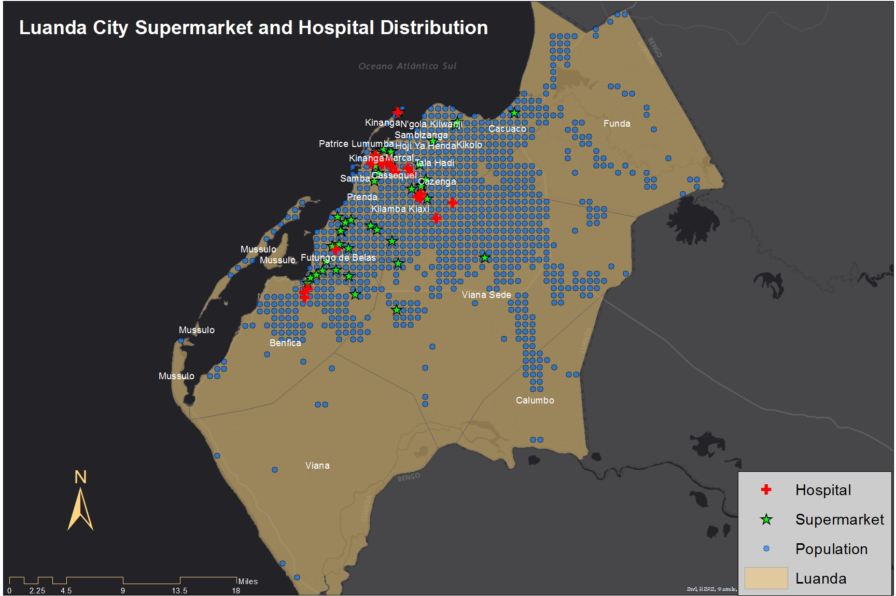
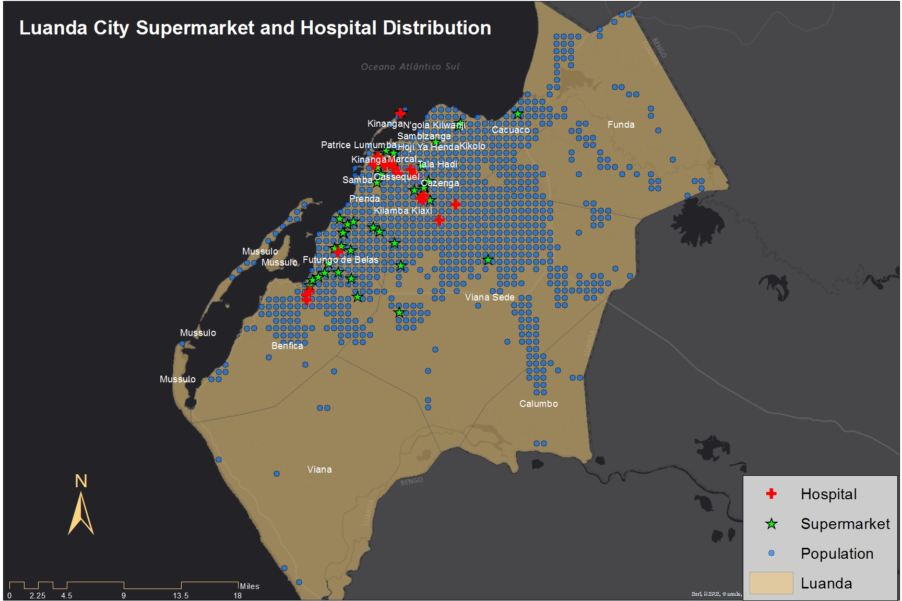

PROJECTS
Project Material
1
INTRODUCTION
- Project Goals
2

DATASETS AND SOFWARE
- Data
- Tools
3

METHODOLOGY
- Data clip
- Query
- UTM Zone 33S

This Map was done in ArcGIS by Isaias and Ezequiel, 4-30-2019
2

NETWORK ANALYSIS (LOCATION ALLOCATION)
- Analysis
4
LOCATION-ALLOCATION OF SUPERMARKETS
- Location-Allocation for supermarkets
This Map was done in ArcGIS by Isaias and Ezequiel, 4-30-2019
5
LOCATION-ALLOCATION OF HOSPITALS
- Location-Allocation for hospitals
This Map was done in ArcGIS by Isaias and Ezequiel, 4-30-2019